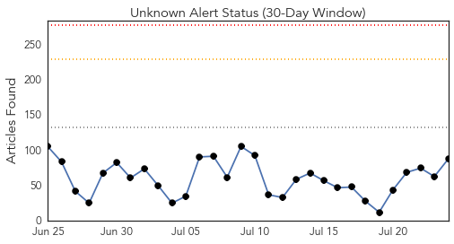
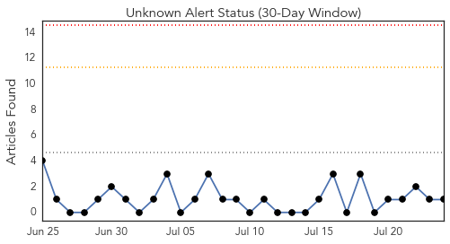
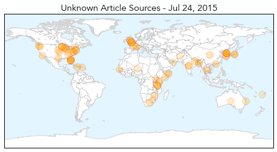

Ebola
30-Day Web Trend
1 alerts, 0 warnings

30-Day Twitter Trend
2 alerts, 0 warnings

Article Locations

Article Confidences

Top Articles:
- 1.000
- Ebola: Not yet over
- 0.999
- Australian nurse tests negative for Ebola
- 0.990
- West Africa Situation Worse Than Worst News Report, But Let's Not Fear but Help Africa
- 0.985
- Suspected Ebola patient dies after being denied treatment
- 0.984
- Gambia Gives Sierra Leone Half A Million Dollar To Fight Ebola
- 0.983
- Why I went to fight Ebola… three times
- 0.974
- No trace of new Ebola transmission
- 0.968
- Measures Taken To Tackle Polio Helped Prevent Nigeria From Ebola Epidemic
- 0.968
- Ebola burial teams seek bribes in Sierra Leone, health official says « Awoko Newspaper
- 0.964
- UN agency assures Sierra Leone of support in fight against Ebola
- 0.959
- Encouraging efforts in restoring our ruined health sector
- 0.955
- New Ebola death rate hits two in Liberia
- 0.952
- IPC Tops 3-Day Agenda
- 0.939
- American- Based Company Develops a New Device To Fight Against Ebola Virus
- 0.931
- Another experimental drugs arrive for Ebola
- 0.926
- From New York to the Ebola frontlines
- 0.910
- Distinct lineages of Ebola virus in Guinea during the 2014 West African epidemic
- 0.873
- Nigeria Marks A Year Without Polio Cases
- 0.867
- British Red Cross blog
- 0.867
- Ebola Outbreak Appeal Archives
- 0.813
- LCP, PREVAIL launch awareness on Ebola Vaccine Study
- 0.774
- president koroma off to washington – April 2015
- 0.767
- Welcome to the Expotimes News
- 0.765
- Eid prayers focused on Ebola eradication
- 0.706
- Top 7 Infectious Disease News Stories
- 0.662
- Hacked traffic sign warns drivers, 'Ebola outbreak ahead'
- 0.632
- Ebola Doctor Who Thought He Was on His Death Bed Reveals the Key Moment That Showed Him Something ‘Profound’ About God
- 0.617
- Ebola Survivors battling side effects in Margibi
- 0.515
- Sierra Leone News: UNMEER closure will not affect UN support-NERC CEO « Awoko Newspaper
- 0.513
- President of ebola survivors commend convalescent plasma transfusion « Awoko Newspaper
Top Tweets:
- 0.938
- Hacked traffic sign warns drivers, 'Ebola outbreak ahead' - Mashable - Mashable http://t.co/iDEygMdJ4v ebola EVD
- 0.923
- Sierra Leone Athletes Try to Regain Stride After Halting for Ebola - Voice of America http://t.co/8NywUsOOhB ebola EVD
- 0.881
- Présentation de l'équipe Africa Stop Ebola ! AfricaStopEbola http://t.co/RLYbEJSvNt
- 0.861
- Sierra Leone begins treating Ebola patients (there were 3 new cases diagnosed this week) with survivors' plasma: http://t.co/XgUFq8pohE
- 0.814
- RT: [PHOTO] Health workers participate in simulation exercise on Ebola infection prevention & control in Sierra Leone. http://t…
- 0.795
- Présentation de l'équipe ! Kaloum Conakry AfricaStopEbola Ebola Guinea http://t.co/acQHgWNzGV
- 0.784
- Report Jour 2 : Résidence à la bluezone de Kaloum Conakry AfricaStopEbola Ebola Guinea http://t.co/MZdYsXBtDc
- 0.784
- Report Jour 1 : Résidence à la bluezone de Kaloum Conakry AfricaStopEbola Ebola Guinea http://t.co/ZoOwEf9vMX
- 0.773
- RT: Lets keep Ebola out of Liberia: keep washing hands w/soap/chlorine/water and follow other prevention methods. http://…
- 0.614
- 24 July - news pouch on avianflu avianinfluenza Ebola EbolaResponse MERS is here: http://t.co/SoiEd1LBxJ
- 0.589
- 23 July - news pouch on avianflu avianinfluenza Ebola EbolaResponse MERS is here: http://t.co/TUmv28WWFC
- 0.587
- RT: @AfricaStopEbola AfricaStopEbola Guinée: concours de chants pour projet Ebola http://t.co/3GDZrO3jpQ via
- 0.577
- New containment system allows for transport of multiple Ebola patients | Local ... - KETV Omaha http://t.co/zw0cFPQqxZ ebola EVD
- 0.559
- Sierra Leone News: For rescuing 200 ebola orphans…'Build on book' - Awoko:... http://t.co/0vtGlXB8A5
- 0.541
- RT: jeudi >>> Mission Humanitaire AfricaStopEbola en Guinée et collecte de Data pour un rapport pour USaid
- 0.519
- Sierra Leone Athletes Try to Regain Stride After Halting for Ebola - Voice of America http://t.co/H974uc5bIA
Unknown
30-Day Web Trend
0 alerts, 0 warnings

30-Day Twitter Trend
0 alerts, 0 warnings

Article Locations
Article Confidences
Top Articles:
- 0.998
- Doctor's diary: should expats worry about the Mers outbreak?
- 0.992
- The World On Arirang
- 0.989
- (LEAD) S. Korea moves to declare 'de facto' end to MERS outbreak
- 0.949
- Spike in Armadillo-related Leprosy Cases Causes Scare in Florida
- 0.926
- Clark County boy infected in salmonella outbreak
- 0.917
- Chicago Tribune
- 0.917
- Chicago Tribune
- 0.895
- Itching And Using And Bumps, Oh My! HELPFUL INFORMATION To Vaginal Issues
- 0.889
- ‘Be really careful with raw meat ‘ Salmonella tied to pork sickens at least 56 in Washington
- 0.884
- MERS outbreak 'virtually' over here
- 0.879
- Seoul ready to declare end of MERS outbreak
- 0.879
- KEPR CBS 19 - News, Weather and Sports - Pasco, WA
- 0.878
- Rautahat Hospital sans doctor for week
- 0.866
- Dead calves source of cryptosporidiosis in veterinary medicine students — Philadelphia
- 0.861
- World’s first malaria vaccine by GlaxoSmithKline to be used for babies in Africa
- 0.849
- Authorities Warn Residents to Steer Clear of Armadillos over Leprosy Concerns
- 0.844
- Public Health announces 56 cases of malaria in recent weeks
- 0.835
- Outbreak Linked to Sushi, Frozen Tuna Contamination
- 0.830
- One dead, 9 affected with Japanese Encephalitis in Arunachal
- 0.819
- Armadillos Linked To Leprosy Cases In Florida
- 0.817
- Strategies to Save Yourself or a Loved One
- 0.817
- Malaria rears its ugly head in Puerto Rico
- 0.815
- Wyoming records first vesicular stomatitis case in a horse for 2015
- 0.808
- Transfer and promotion spree for doctors
- 0.802
- Salmonella illness outbreak appears to be linked to pork - More than 50 cases in eight Washington counties in 2015 so far
- 0.799
- Health partners in Somalia concerned about scaling down of life-saving health services due to funding shortages
- 0.799
- More women statewide passing syphilis to their newborns
- 0.779
- Horse dies from Hendra
- 0.778
- Finally, a viable vaccine for Malaria, but can only fight one strain
- 0.772
- A malaria vaccine nearly 30 years in the making just got a green light from EU regulators
- 0.765
- Tasty Prawns Prevent Blood Flukes
- 0.764
- Salmonella outbreak linked to sushi sickens 62, CDC reports
- 0.762
- Leprosy cases in Florida: Armadillos linked to increased cases of leprosy - health officials
- 0.759
- Hendra: Quarantine after horse dies from Hendra virus on Queensland property
- 0.759
- Malaria death toll in Northern Uganda hits 165 - Uganda
- 0.756
- One dead, 9 affected with Japanese Encephalitis in Arunachal
- 0.751
- First malaria vaccine gets green light
- 0.747
- UN health agency welcomes European regulators’ initial green light on malaria vaccine
- 0.743
- Promotional campaign aims to lure Chinese tourists back to S. Korea
- 0.737
- Wildlife Increases Foot and Mouth Spread Among Zimbabwean Cattle
- 0.737
- Jeju governor sees formal end to MERS outbreak around Aug. 2
- 0.734
- Salmonella Outbreak In 11 US States Linked To Sushi
- 0.722
- Armadillos Blamed For Spread of Leprosy In Florida
- 0.716
- Malaria main cause of 20% of child death in Kenya
- 0.711
- Tuna Used To Make Sushi May Have Caused Salmonella Outbreak In Several States
- 0.705
- Health partners in Somalia concerned about scaling down of life-saving health services due to funding shortages - Somalia
- 0.694
- Heat-related illnesses declines on awareness
- 0.693
- Jeju governor sees formal end to MERS outbreak around Aug. 2
- 0.687
- Kenya : Malaria vaccine gets regulatory nod
- 0.676
- Economic Impacts of Vesicular Stomatitis Outbreaks
Showing top 50 articles...
Top Tweets:
- 0.621
- Read more about a vaccine candidate that prevents spread of malaria by blocking its transmission to mosquitoes http://t.co/ZhYPbgNTEA